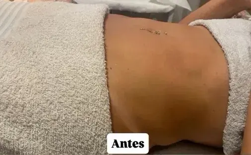
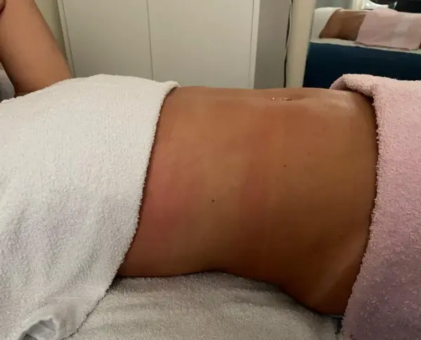

Antes & Depois
Evidências visuais de transformação
 Antes
Antes
 Depois
Depois
Drenagem Pós-Operatória
Recuperação de abdominoplastia com protocolo de 10 sessões. Redução significativa do edema e prevenção total de fibroses.
10 sessões • 5 semanas
Antes Depois
Depois
Estética Facial Avançada
Protocolo de clareamento e rejuvenescimento com peeling enzimático, vitamina C e máscara LED.
8 sessões • 4 semanas
Antes Depois
Depois
Massagem Modeladora
Remodelação corporal com técnicas de massagem vigorosa combinada com drenagem. Redução visível de medidas.
10 sessões • 5 semanas